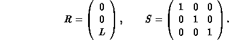
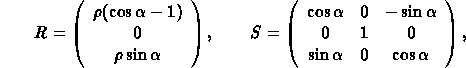
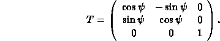

A rotation of the element about the S-axis has no effect on R and S, since the rotations of the reference system before and after the element cancel.
Figure 1: Reference System for Straight Beam Elements

where alphais the bend angle. A positive bend angle represents a bend to the right, i.e. towards negative x values. For sector bending magnets, the bend radius is given by rho, and for rectangular bending magnets it has the value
rho = L / 2 sin(alpha/2).
If the magnet is rotated about the s-axis by an angle psi, R and S are transformed by
R* = T R, S* = T S T-1.
where T is the orthogonal rotation matrix

The special value psi = pi/2 represents a bend down.
Figure 2: Reference System for Rectangular Bends; The signs of the pole-face rotations are positive as shown.
Figure 3: Reference System for Sector Bends; The signs of the pole-face rotations are positive as shown.
hansg, January 24, 1997